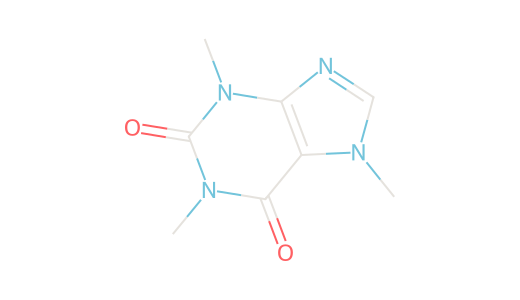

СТРУКТУРНАЯ ФОРМУЛА

C · N · OО дескрипторах
logP относится к нейтральной форме; logD — к распределению форм при заданном pH. MW, logP и TPSA помогают сравнить структуры, но не определяют перенос через ГЭБ сами по себе.
Терминология IUPAC
SMILES / СТРУКТУРА ИЗ РЕЕСТРА